Baricentro è l’hangar dei tuoi aeromodelli. Per ogni modello inserisci la geometria dell’ala e vedi la pianta con la corda media aerodinamica e la fascia di centraggio al 25–33 %. Trascina il punto di equilibrio: il modello si inclina finché non è in bolla, e Baricentro ti dice quanti grammi di piombo servono in punta o in coda.
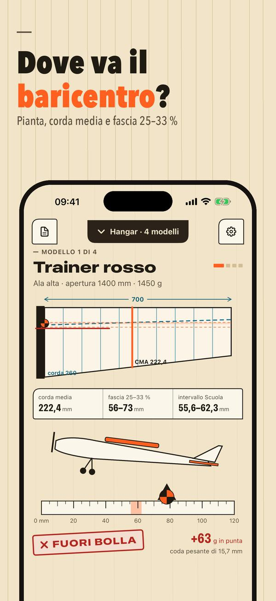
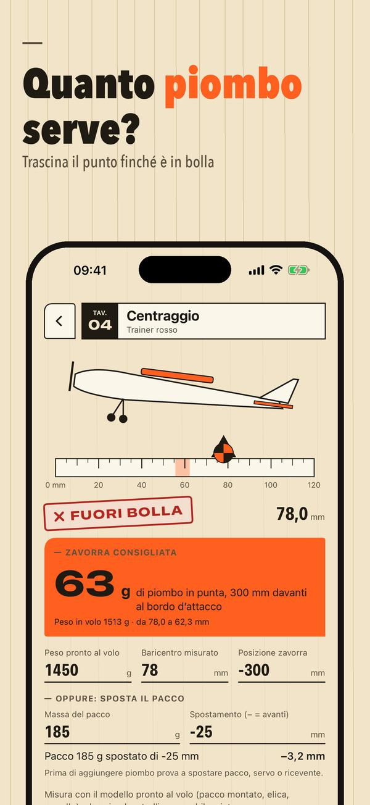
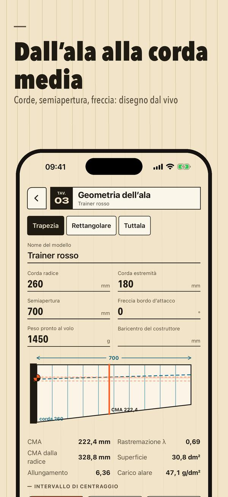
Pianta della semiala con corda media aerodinamica e fascia di centraggio
Bilanciamento con punto di equilibrio trascinabile e grammi di zavorra
Comandi: corse in mm, doppie corse ed expo con le curve
Pacchi LiPo: cicli, resistenza interna per cella e promemoria di stoccaggio
Diario di volo con etichette NFC o QR, oppure a mano
Baricentro ist der Hangar für deine Flugmodelle. Für jedes Modell gibst du die Flügelgeometrie ein und siehst den Grundriss mit mittlerer aerodynamischer Profiltiefe und dem Schwerpunktbereich bei 25–33 %. Zieh den Auswiegepunkt: das Modell neigt sich, bis es im Lot ist, und Baricentro sagt dir, wie viel Gramm Blei in die Nase oder ins Heck gehören.
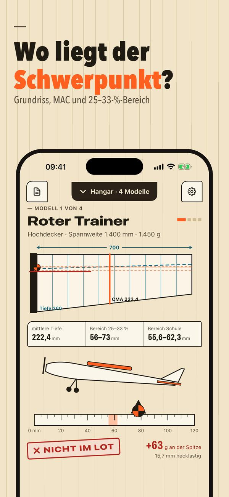
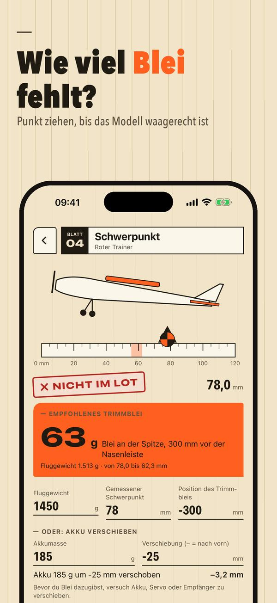
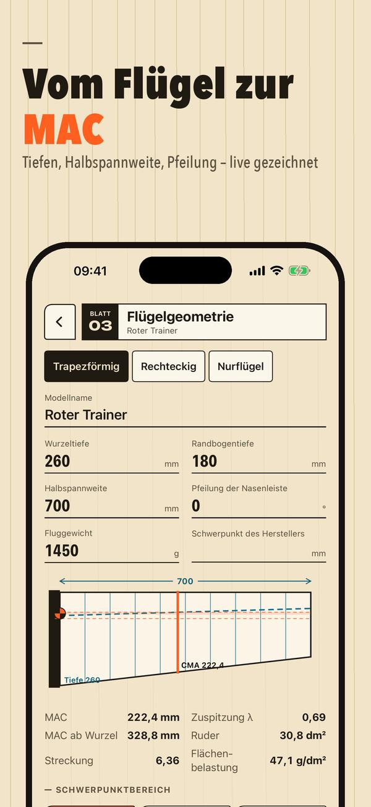
Halbflügel-Grundriss mit mittlerer Profiltiefe und Schwerpunktbereich
Auswiegen mit ziehbarem Schwerpunkt und Gramm Trimmblei
Ruder: Ausschläge in mm, Dual Rate und Expo mit Kurven
LiPo-Akkus: Zyklen, Innenwiderstand je Zelle, Erinnerung an Lagerspannung
Flugbuch mit NFC- oder QR-Etikett oder von Hand
Anpassbare Checkliste vor dem Flug
Kurzfassung der EU-Regeln für die offene Kategorie
Baricentro est le hangar de tes aéromodèles. Pour chaque modèle, saisis la géométrie de l’aile et vois la vue en plan avec la corde moyenne aérodynamique et la plage de centrage à 25–33 %. Fais glisser le point d’équilibre : le modèle s’incline jusqu’à être à l’horizontale, et Baricentro indique combien de grammes de plomb ajouter au nez ou à la queue.
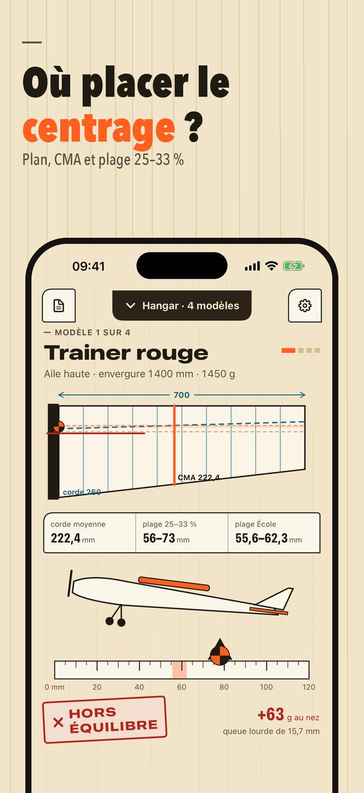
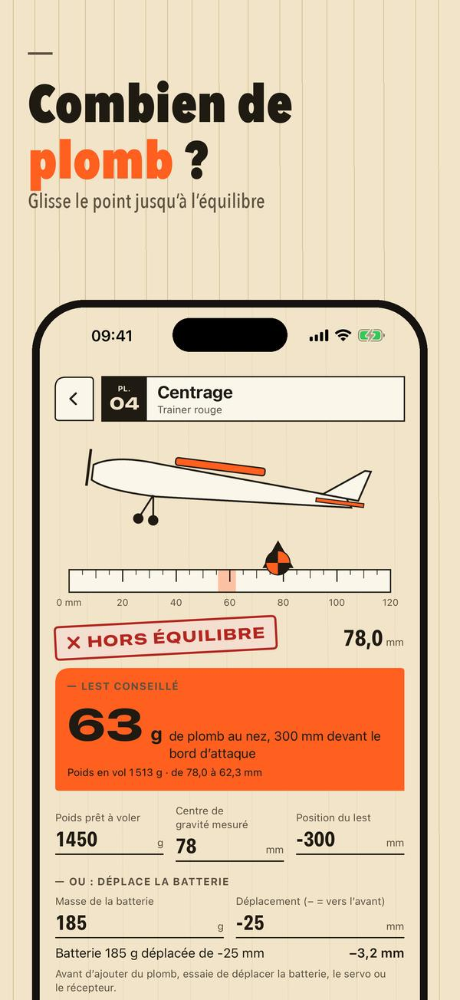
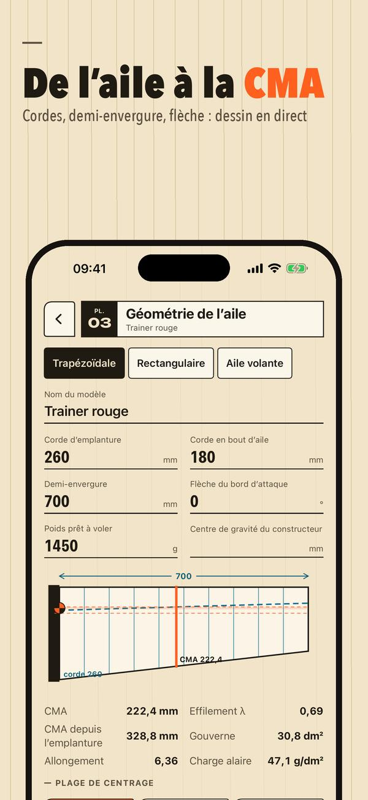
Vue en plan de la demi-aile avec corde moyenne et plage de centrage
Équilibrage avec point glissant et grammes de lest
Commandes : débattements en mm, double débattement et expo avec courbes
Batteries LiPo : cycles, résistance interne par élément, rappel de stockage
Carnet de vol avec étiquette NFC ou QR, ou à la main
Baricentro es el hangar de tus aeromodelos. Para cada modelo introduces la geometría del ala y ves la planta con la cuerda media aerodinámica y el rango de centrado al 25–33 %. Arrastra el punto de equilibrio: el modelo se inclina hasta quedar nivelado, y Baricentro te dice cuántos gramos de plomo hacen falta en el morro o en la cola.
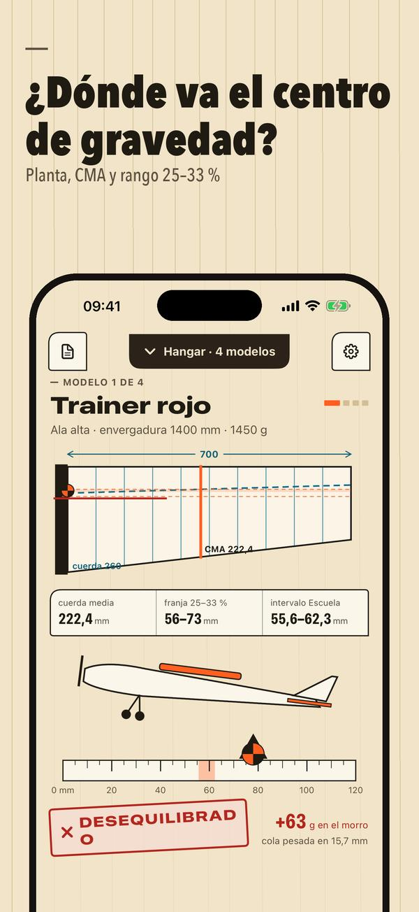
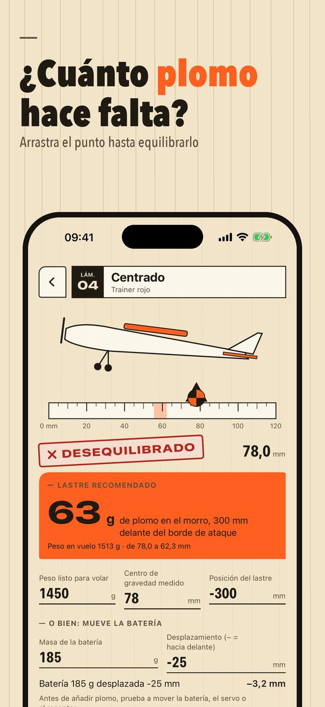
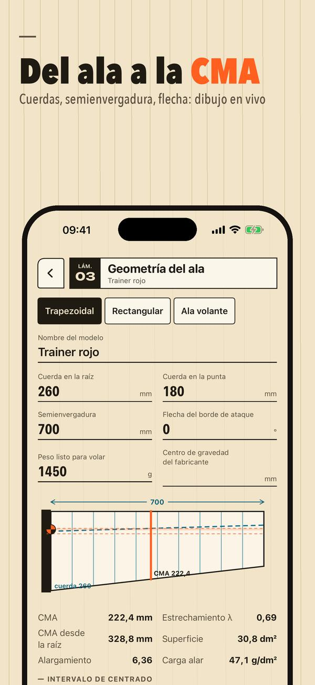
Planta de la semiala con cuerda media y rango de centrado
Equilibrado con punto arrastrable y gramos de lastre
Mandos: recorridos en mm, dual rate y expo con curvas
Baterías LiPo: ciclos, resistencia interna por celda y aviso de almacenamiento
Baricentro to hangar Twoich modeli latających. Dla każdego modelu wpisujesz geometrię skrzydła i widzisz obrys ze średnią cięciwą aerodynamiczną i zakresem środka ciężkości 25–33 %. Przeciągnij punkt podparcia: model przechyla się, aż będzie w poziomie, a Baricentro poda, ile gramów ołowiu dodać w nosie lub w ogonie.
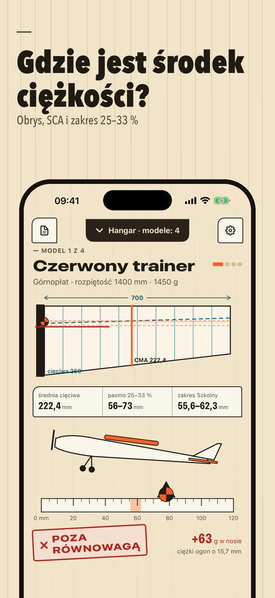
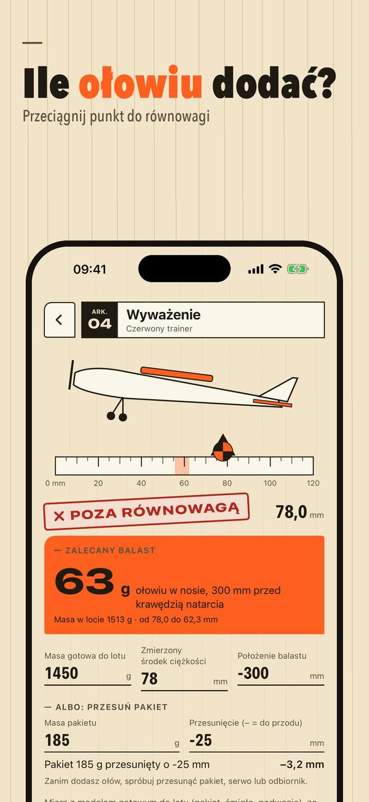
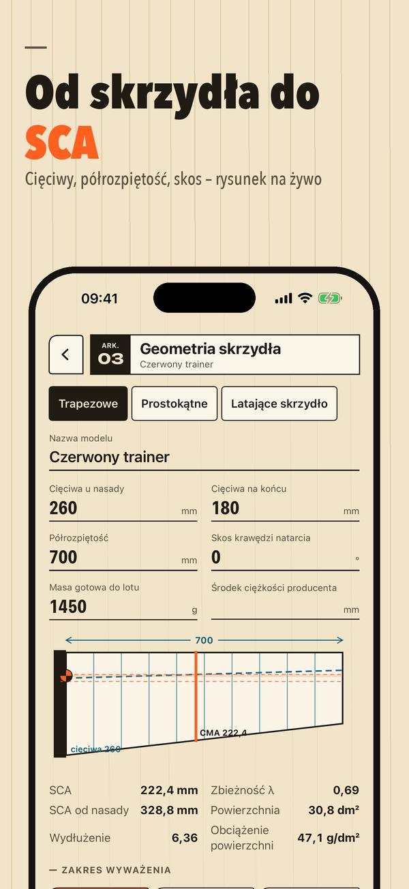
Obrys półskrzydła ze średnią cięciwą i zakresem środka ciężkości
Wyważanie z przeciąganym punktem i gramami balastu
Stery: wychylenia w mm, dual rate i expo z krzywymi
Akumulatory LiPo: cykle, rezystancja wewnętrzna ogniw, przypomnienie o napięciu przechowywania
Baricentro is de hangar voor je vliegmodellen. Per model vul je de vleugelgeometrie in en zie je het bovenaanzicht met de gemiddelde aerodynamische koorde en het zwaartepuntbereik op 25–33 %. Sleep het balanspunt: het model kantelt tot het waterpas hangt, en Baricentro vertelt hoeveel gram lood er in de neus of de staart moet.
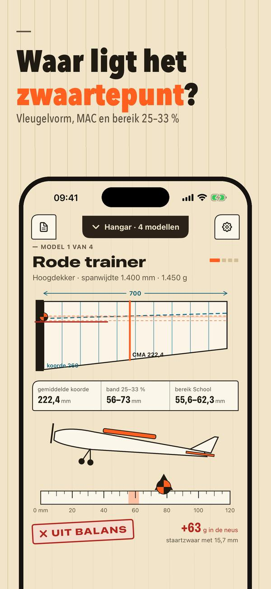
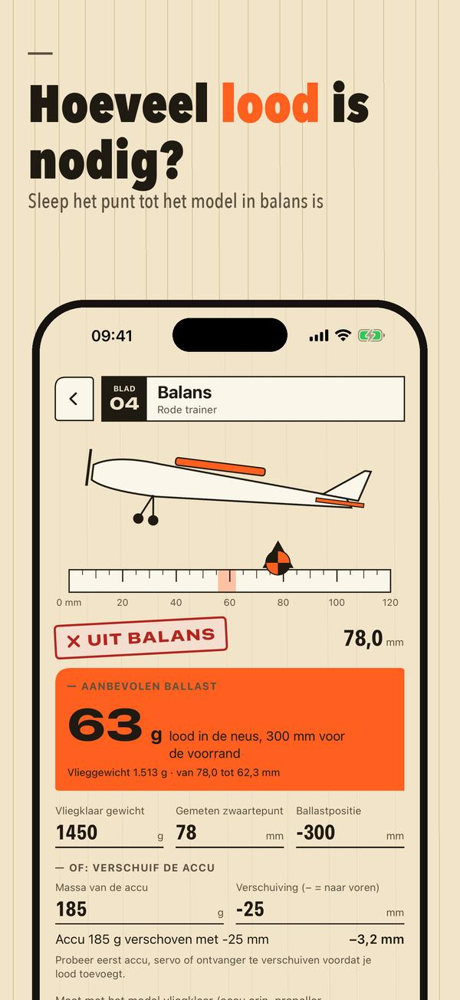
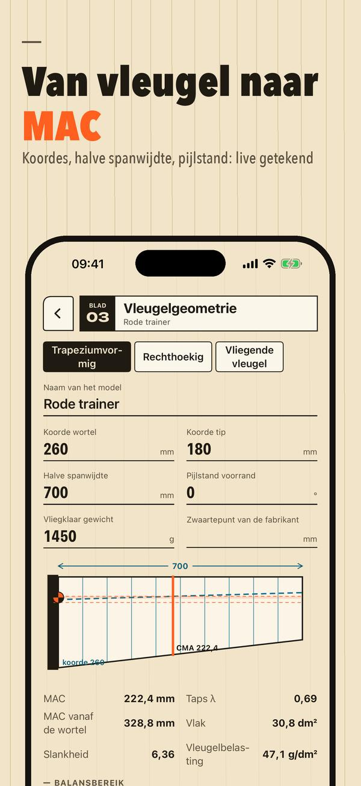
Bovenaanzicht van de halve vleugel met gemiddelde koorde en zwaartepuntbereik
Uitbalanceren met sleepbaar balanspunt en gram lood
Roeren: uitslagen in mm, dual rate en expo met curves
LiPo-accu’s: cycli, inwendige weerstand per cel, herinnering opslagspanning
Vlieglog met NFC- of QR-label, of met de hand
Aanpasbare checklist voor de vlucht
Samenvatting van de EU-regels voor de open categorie
Baricentro je hangár pro tvé létající modely. U každého modelu zadáš geometrii křídla a uvidíš půdorys se střední aerodynamickou tětivou a rozsahem těžiště 25–33 %. Posuň bod vyvážení: model se nakloní, dokud není ve vodorovné poloze, a Baricentro řekne, kolik gramů olova přidat do špičky nebo do ocasu.
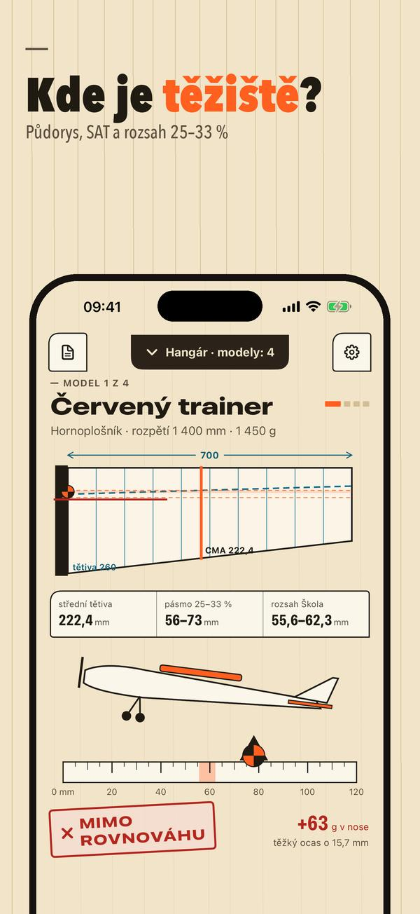
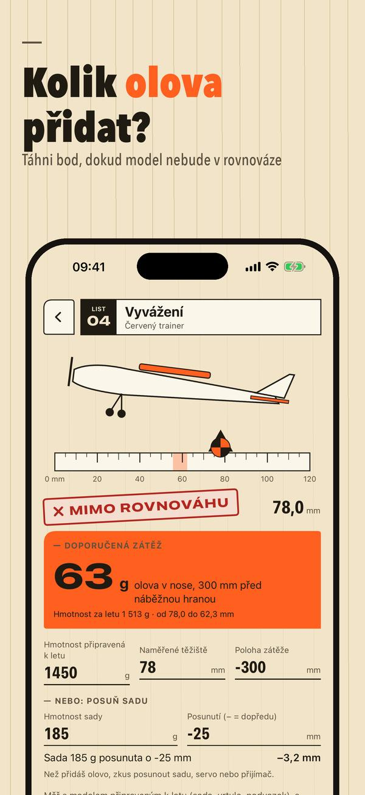
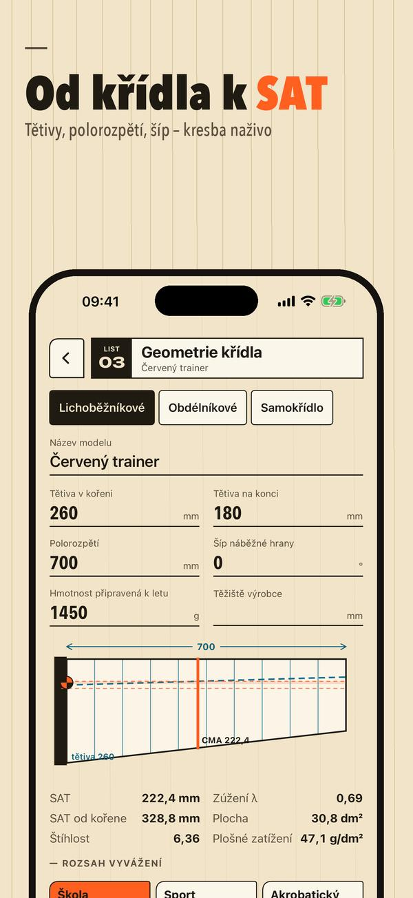
Půdorys polokřídla se střední tětivou a rozsahem těžiště
Vyvážení s posuvným bodem a gramy zátěže
Kormidla: výchylky v mm, dvojí výchylky a expo s křivkami
Akumulátory LiPo: cykly, vnitřní odpor článků, připomínka skladovacího napětí